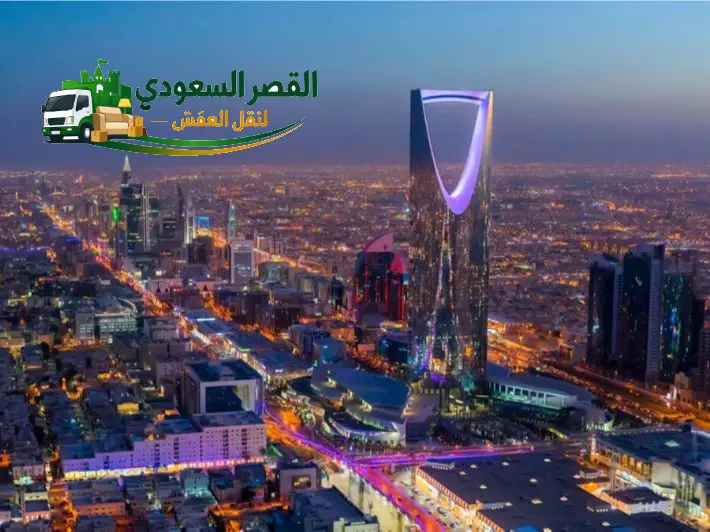

تفاصيل وتجهيزات مسار الرياض - جدة
كجزء من شبكة خدماتنا، نقدم خدمة نقل العفش العكسية من العاصمة الرياض إلى جدة بنفس معايير الجودة والاحترافية.
اختيار المركبة المناسبة وتثبيت المنقولات بشكل صحيح هما سر نجاح النقل بين المدن. نضمن توفير سيارات دينا أو شاحنات مغلقة تناسب حجم عفشك لحمايته من العوامل الجوية على الطرق السريعة.
ضمان وحماية المنقولات
نحن في شركة القصر السعودي نلتزم بأعلى معايير الحماية. نقوم بتغليف العفش بأفضل المواد وتثبيته بعناية داخل الشاحنة لتقليل مخاطر التلف والاهتزاز أثناء الرحلة الطويلة. نحن مسؤولون عن تسليم أثاثك سليماً كما استلمناه.
مسار النقل البري من الرياض إلى جدة
شركة نقل عفش من الرياض الى جدة: الخدمة الشاملة والأولى لنقل الأثاث بين المدن
تُعد الاستعانة بـ شركة نقل عفش من الرياض الى جدة خياراً استراتيجياً جوهرياً لكل عائلة أو مؤسسة ترغب في الانتقال السلس والمؤمن من العاصمة الرياض إلى عروس البحر الأحمر جدة. إن رحلة النقل بين هاتين المدينتين الرئيسيّتين تزيد مسافتها عن 950 كيلومتراً عبر الطرق الصحراوية والسريعة، وهي مسافة تتطلب أعلى درجات التخصص والخبرة اللوجستية التي لا تتيحها شركات النقل العادية أو الناقلون الفرديون. وتفخر شركة القصر السعودي بأنها الكيان الفني الرائد المعترف به في تقديم خدمات نقل العفش بين مدن المملكة العربية السعودية بأعلى مستويات الاحترافية والأمان الكامل.
معلومات رحلة النقل: الرياض إلى جدة
* المدة قد تختلف حسب حركة المرور والتوقفات وظروف الطريق.
إن تميزنا كأفضل شركة شحن ونقل اثاث يعود إلى فهمنا الدقيق لخصوصية وطبيعة مسار النقل بين الرياض وجدة؛ فالعفش المنقول يواجه تغيرات مناخية واهتزازات متواصلة ومخاطر الغبار الصحراوي أثناء الطريق. وولهذا السبب، حرصنا في شركة القصر السعودي على تطوير المنظومة التشغيلية بالكامل بدءاً من تقديم خدمة الفحص الفني المبدئي بالرياض، وصولاً إلى اعتماد أحدث تقنيات الفك المنظم والأكياس المعتمدة والممغنطة لحفظ المسامير والمفصلات، يليه التغليف الخماسي الطبقات الموضح في صفحة تغليف العفش بجدة والرياض لحماية كافة الأخشاب والرخام والأجهزة الإلكترونية.
نحن نغطي من خلال خدماتنا المعتمدة لـ نقل اثاث من الرياض لجدة كافة الاحتياجات السكنية والتجارية، بدءاً من نقل الشقق الصغيرة والمتوسطة، إلى جانب خطط نقل الفلل والشقق والمكاتب بجدة والرياض، ونقل المقرات الحكومية والشركات والمستشفيات، بفضل توفير طواقم من النجارين الفنيين المدربين على فك وتركيب أعقد موديلات غرف النوم الإيطالية والمودرن والمطابخ وأثاث إيكيا وفق الكتالوجات الأصلية، وهو ما تفصله بوضوح صفحة فك وتركيب عفش بجدة والرياض.
علاوة على ذلك، نتيح لعملائنا في الرياض مرونة فائقة في اختيار جدول النقل المناسب لهم مع إمكانية التنسيق للوصول في نفس اليوم أو خلال 24 ساعة كحد أقصى بجدة، مع توفير أجهزة التتبع الذكي GPS التي تمكن العميل من متابعة مسار الشاحنة لحظة بلحظة أثناء قطعها لمسافة الطريق بين الرياض وجدة. يمكنك تصفح إرشاداتنا المتميزة في مدونة شركة نقل عفش بجدة والرياض للاطلاع على كافة النصائح والتجارب المعرفية الهامة.
تلتزم شركة نقل عفش من الرياض الى جدة بتقديم ضمان كتابي وتأمين كامل ضد الكسر والتلف أو الخدش، مع استعراض أرخص الأسعار والخصومات التنافسية المتاحة عبر صفحتنا أسعار نقل العفش بجدة والرياض. اتصل بنا فوراً على الرقم 0540026747 واستفد من المعاينة المجانية والخصم الفوري الذي يصل إلى 30% لرحلتك اليوم.
هل تبحث عن ارخص شركة نقل عفش من الرياض لجدة بضمان 100%؟
شاحناتنا المغلقة وطواقمنا الفنية جاهزة للانطلاق فوراً لخدمتك!

طريقة التخطيط واللوجستيات لمسار الرياض – جدة (950 كم) وحماية الأثاث
يتطلب مسار نقل عفش من الرياض لجدة دراسة مسبقة دقيقة وتخطيطاً هندسياً عالياً لتفادي المخاطر الناجمة عن قطع الطريق الصحراوي الممتد لـ 950 كيلومتراً. وتعتمد شركة القصر السعودي على بروتوكول لوجستي صارم يضمن وصول كافة المنقولات بنفس الحالة التي كانت عليها بالمنزل الأول بالرياض. تشمل هذه الخطة اختيار الطرق السريعة المؤمّنة (طريق الرياض السريع أو طريق الطائف السريع) بناءً على النشرات الجوية وحالة الطقس ودرجات الحرارة، لتفادي المناطق التي تكثر فيها العواصف الترابية أو الرمال الزاحفة.
تضع افضل شركة نقل عفش بالمملكة السلامة والأمان في مقدمة أولوياتها من خلال إجراء فحص ميكانيكي وهيدروليكي شامل لجميع شاحنات الدينا المخصصة لرحلات جدة قبل انطلاقها من الرياض. ويتم التحقق من عمل مكابح الأمان، الإطارات المقواة التي تتحمل درجات الحرارة المرتفعة، ونظم إغلاق الأبواب الخلفية. كما نلزم كل شاحنة بوجود سائقين رئيسيين يتناوبان على القيادة خلال الرحلة لضمان عدم إرهاق السائق والحفاظ على أعلى مستويات اليقظة والسلامة على الطريق.
إلى جانب تحضيرات الطريق، تتم عملية رص وتحميل العفش داخل صندوق الشاحنة بطريقة هندسية تسمى "التوزيع المتوازن للأحمال" (Weight Distribution). يضع نجارو وعمال شركة القصر السعودي الأجزاء الثقيلة مثل الأجهزة الكهربائية والخزائن الحديدية وهياكل الأسرة بالقرب من أرضية الشاحنة ومركز الثقل، مع وضع الألواح الخشبية والزجاجيات والكراتين في الطبقات الأعلى وتثبيتها بحبال وأحزمة شائكة تمنع أي تحرك أو اهتزاز أثناء السير في المنحنيات أو عند التوقف المفاجئ.
كذلك نوفر حلاً ممتازاً للعملاء الذين يحتاجون لحفظ أثاثهم مؤقتاً قبل استلام الشقة أو الفيلا بجدة عبر خدمات تخزين العفش بجدة والرياض ومستودعاتنا المعتمدة بكلتا المدينتين. تتم عملية الحفظ والتخزين داخل مستودعات مؤمنة بكاميرات مراقبة على مدار 24 ساعة ونظم مكافحة الحريق، مما يوفر للعميل راحة بال تامة حتى موعد التنزيل والتثبيت النهائي.
تتيح لك شركة نقل اثاث من الرياض الى جدة فرصة متابعة موقع الشاحنة عبر تطبيق التتبع الرقمي الخاص بخدمة العملاء، مع استقبال إشعارات فورية عند مغادرة الرياض وعند الوصول لمشارف مدينة جدة. لمزيد من النصائح حول التحضير للرحلات الطويلة، يمكنك قراءة مقالنا المعرفي الخاص بـ إرشادات النقل الآمن بين المدن السعودية المتاح على الموقع.
خدمات الفك والتركيب والتغليف المخصصة لرحلات نقل العفش من الرياض لجدة
إن الأساس المتين لنجاح عملية شركة نقل عفش من الرياض الى جدة يكمن في جودة ودقة أعمال النجارة والتغليف التي تسبق التحميل. وتوفر شركة القصر السعودي فرقة متخصصة من أفضل نجارين فك وتركيب أثاث بالرياض وجدة، مدربين على التعامل مع أعقد موديلات غرف النوم والمطابخ، إلى جانب استخدام أدوات دريل لاسلكية ذات تحكم عزمي تحمي الأخشاب المضغوطة (MDF) والخشب الطبيعي من أي تشقق أو اتساع لثقوب المفصلات والبراغي.
تتسم خدماتنا في فك وتركيب العفش بالرياض وجدة بالترتيب الدقيق؛ حيث يتم فك غرف النوم، الدواليب الكبيرة السحابية والكابينة، التسريحات والأسرة الهيدروليكية، ثم وضع المسامير والبراغي والوصلات الخشبية في أكياس بلاستيكية مرقمة وممغنطة ومكتوب عليها اسم القطعة. وعند الوصول إلى جدة، يتم تجميع كل غرفة نوم بنفس الترتيب والمقاسات باستخدام أجهزة ميزان الليزر المائي لضمان الاستقامة الكاملة وعدم وجود أي اهتزاز أو صرير.
أما بالنسبة لأعمال التغليف الحامي، فتعتمد شركة تغليف عفش بالرياض وجدة التابعة للقصر السعودي على التغليف الخماسي الطبقات المخصص لرحلات النقل بين المدن. يتكون هذا التغليف من: طبقة أولى من النايلون النظيف لحماية القماش، طبقة ثانية من الفوم الإسفنجي لحماية الأخشاب والطلاء، طبقة ثالثة من الكرتون المقوى المضلع لحماية الزوايا والأطراف، طبقة رابعة من البلاستيك الفقاعي المقوى (Bubble Wrap) لامتصاص الصدمات على الطرق الصحراوية، وأخيراً طبقة خامسة من النايلون الاستريتش لمنع دخول الأتربة والغبار نهائياً.
ولا تقتصر خدماتنا على الأثاث الخشبي والمفروشات فقط، بل تمتد لتشمل فك وتأمين وتغليف الأجهزة الكهربائية والمكيفات والمطابخ عبر طواقم متخصصة تجيد فك مكيفات السبليت والشباك وتعبئة غاز الفريون وتغليف الشاشات الحساسة والرخام الطبيعي والصناعي كما هو موضح في صفحة خدمات الفك والتركيب المتكاملة بجدة والرياض.
إن الاعتماد على أفضل شركة نقل اثاث من الرياض لجدة يضمن لك استلام عفشك في مسكنك الجديد بجدة بحالة ممتازة ومثبت بنفس دقة الفابريكة، مع إتاحة خدمة التلميع السريع وتنظيف الآثار وإعطائك ضماناً كتابياً يمتد لـ 3 أشهر. اتصل برقمنا المباشر 0540026747 واستفد من باقات الفك والتغليف المخصصة اليوم.
أسطول دينا نقل عفش من الرياض الى جدة والشاحنات المغلقة المجهزة
تُشكل وسائل النقل والشاحنات شريان الحياة لرحلات السفر بين المدن. وتفخر شركة القصر السعودي باقتناء أضخم أسطول من شاحنات دينا نقل عفش من الرياض الى جدة المصممة خصيصاً للشحن السريع والآمن لمسافات طويلة. تتميز شاحناتنا بأنها مغلقة بالكامل بأبواب خلفية محكمة لمنع تسرب مياه الأمطار أو الأتربة والغبار الصحراوي أثناء خوض مسافة الـ 950 كم بين المدينتين.
تتنوع أحجام وأشكال الشاحنات المتوفرة لدى شركة نقل عفش بالرياض وجدة لتبدأ من شاحنات الدينا الصغير والمتوسطة (جامبو 4.5 متر و6 متر) المناسبة لنقل شقق الاستوديو و3 غرف نوم، وصولاً إلى التريلات الكبيرة والشاحنات ذات الطول 12 متراً المخصصة لنقل عفش الفلل الكاملة والقصور والمقرات التجارية الكبرى الموضحة بـ خدمات نقل الفلل بجدة والرياض.
جميع صناديق دينا نقل العفش لدينا مبطنة من الداخل بقماش اللباد السميك والمطاط الممتص للصدمات، ومزودة بأعمدة فولاذية مجوفة وأربطة قماشية مقواة تتيح تثبيت كل قطعة أثاث أو جهاز كهربائي في مكانه المخصص دون أي احتمالية للانزلاق أو السقوط أثناء المطبات أو التوقف المفاجئ على الطرق السريعة. كما يتم تجهيز الشاحنات بأوناش رفع ومصاعد هيدروليكية لتسهيل عملية التحميل والتنزيل من الصندوق دون الاحتكاك بالأرضيات.
كما نتيح للعملاء خيارين رئيسيين للشحن بين الرياض وجدة: **الخيار الأول: الشحن الخاص المباشر (V.I.P)** حيث تنطلق الشاحنة مخصصة لعفش عميل واحد فقط وتصل لجدة خلال 24 ساعة، و**الخيار الثاني: الشحن المجمّع الاقتصادي** للقطع القليلة والأغراض المحدودة، مما يتيح للعميل الاستفادة من أرخص اسعار نقل العفش من الرياض لجدة وتوفير تكاليف الرحلة.
مهما كان حجم عفشك أو عدد القطع التي ترغب في شحنها، فإن دينا نقل عفش من الرياض لجدة التابعة لشركة القصر السعودي جاهزة تماماً لتلبية طلبك في أي وقت. تواصل معنا على الرقم 0540026747 واحجز شاحنتك اليوم مع ضمان أفضل خدمة وأعلى مستوى أمان.
تغطية كافة أحياء الرياض والوصول السريع لجميع أحياء ومناطق مدينة جدة
تتمتع شركة القصر السعودي بشبكة فروع وانتشار جغرافي واسع يغطي كافة الأحياء السكنية والتجارية في مدينة الرياض وضواحيها، مع إمكانية التواصل والوصول الفوري لتقديم خدمة نقل عفش من الرياض الى جدة. نوفر طواقم متحركة مستعدة للوصول إلى العميل في أي منطقة خلال أقل من 30 دقيقة من الاتصال.
في مدينة الرياض، نغطي أحياء شمال الرياض بالكامل مثل حي الملقا، حي الياسمين، حي النخيل، حي الصحافة، حي العارض، حي النرجس، وحي العقيق. كما نصل إلى أحياء شرق وغرب وجنوب ووسط الرياض مثل حي السليمانية، حي العليا، حي الروضة، حي الحمراء، وحي الشفا. وعند الوصول لمدينة جدة، نغطي كافة أحياء جدة الساحلية والمجتمعات الحديثة مثل حي الشاطئ، حي النعيم، حي السلامة، حي الحمدانية، حي الصفا، وحي المروة.
إن هذا الانتشار الشامل يمنح عملاءنا ثقة كاملة في سرعة إنجاز الرحلة وبدء الحياة السكنية أو العمل التجاري بجدة دون أي تأخير أو ارتباك. اتصل فوراً برقمنا الفوري 0540026747 واستفد من خدماتنا المتكاملة بجميع الأحياء.
أسعار شركة نقل عفش من الرياض الى جدة – جدول الشفافية التامة والعروض
حرصاً من شركة القصر السعودي على تقديم أعلى قيمة مقابل السعر، فإننا نلتزم بإتاحة خريطة تسعيرية عادلة ومحددة لـ اسعار نقل العفش من الرياض لجدة دون أي رسوم خفية أو زيادات عشوائية بعد بدء العمل. تعتمد التكلفة الإجمالية على حجم العفش المنقول، عدد الشاحنات، نوع التغليف، وعدد الغرف المراد فكها وتجميلها.
| حجم الشقة / نوع العفش المنقول | الخدمات المدمجة بالباقة | نوع الشاحنة والطاقم | الوقت التقديري للوصول | السعر التنافسي لشركة القصر |
|---|---|---|---|---|
| نقل استوديو / غرفة واحدة ملحقة | فك + تغليف عادي + نقل + تركيب | دينا صغيرة + 2 عمال | 24 ساعة | 1300 - 1600 ريال |
| نقل عفش شقة 3 غرف وصالة | فك غرفتين + تغليف خماسي + تركيب | دينا جامبو مغلقة + 4 عمال + نجار | 24 - 36 ساعة | 2200 - 2700 ريال |
| نقل عفش شقة 5 غرف وصالة كاملة | فك شامل + تغليف كرتون وفوم + تركيب كامل | 2 دينا مغلقة + 6 عمال + 2 نجارين | 24 - 48 ساعة | 3400 - 4200 ريال |
| نقل فيلا كاملة أو قصر من الرياض الى جدة | فك فني شامل + تغليف فاخر + ونش هيدروليكي | تريلا 12 متر + طاقم 10 عمال ونجارين | 48 ساعة | تبدأ من 6000 ريال |
| نقل مكتب تنفيذي أو شركة صغيرة | فك مكاتب وقواطع + حفظ ملفات + تركيب بجدة | دينا مغلقة + طاقم مكاتب متقدم | 24 ساعة | 2500 - 3500 ريال |
| نقل عفش مجمّع (شحن غرف منفصلة) | تغليف مقوى + شحن مجمع + تسليم بجدة | شاحنة مجمعة مؤمنة | 2 - 3 أيام | 800 - 1200 ريال |
نقدم في شركة القصر السعودي خصومات حصرية تصل إلى 30% للحجوزات المبكرة وللعملاء المستمرين. يمكنك قراءة مقالنا الخاص التفصيلي حول كيفية تقليل تكاليف نقل العفش بين المدن للحصول على أفضل سعر وأعلى جودة.
جداول المقارنة الشاملة: شركة القصر السعودي مقابل الناقلين الفرديين والعمالة العشوائية
لضمان اتخاذ القرار الصحيح والحفاظ على ممتلكاتك الثمينة، نستعرض معك 4 جداول مقارنة دقيقة توضح الفروق الجوهرية بين أسلوب عمل شركة القصر السعودي المعتمد وبين العمالة العشوائية بالسوق:
1. مقارنة تجهيز الشاحنات والأمان على الطريق (950 كم):
| معيار المقارنة | شركة القصر السعودي لنقل العفش | العمالة والناقلون العشوائيون |
|---|---|---|
| نوع وحالة الشاحنة | دينا مغلقة ومبطنة ومزودة بعوازل حرارية لحماية الغبار | دينا مفتوحة أو مكشوفة تعرض العفش للشمس والغبار الأمطار |
| نظام التتبع (GPS) | نظام تتبع حي ومباشر يتيح للعميل معرفة موقع العفش 24/7 | عدم وجود أي نظام تتبع وصعوبة التواصل مع السائق |
| سائقو الرحلة الطويلة | سائقان محترفان معتمدان للتناوب وضمان السلامة على الطريق | سائق واحد يواجه خطر الإرهاق والحوادث الصحراوية |
2. مقارنة التغليف وحماية المنقولات:
| الأسلوب والمواد | شركة القصر السعودي لنقل العفش | العمالة والناقلون العشوائيون |
|---|---|---|
| طبقات التغليف المستعملة | تغليف خماسي (فوم، فقاعات، كرتون، نايلون، استريتش) | تغليف عشوائي بطبقة واحدة من النايلون الخفيف فقط |
| حماية الزوايا والرخام | استخدام زوايا كرتونية مقواة وفوم عازل للرخام والزجاج | إهمال التغليف الفاصل مما يسبب تشقق الرخام والخدوش |
| حفظ المسامير والمفصلات | أكياس بلاستيكية ممغنطة ومكتوب عليها اسم كل قطعة | تجميع البراغي في كرتون عشوائي يتسبب في ضياعها |
3. مقارنة الفك والتركيب والتنفيذ:
| النتائج الفنية | شركة القصر السعودي لنقل العفش | العمالة والناقلون العشوائيون |
|---|---|---|
| طاقم النجارة والتكييف | نجارون وفنيو تكييف محترفون لأثاث إيكيا والمودرن والمكيفات | عمالة غير متخصصة تستخدم مفكات قديمة تكسر الأخشاب |
| موازين الضبط والليزر | استخدام ميزان ليزر مائي لضبط استقامة الدواليب والمطابخ بجدة | تركيب عشوائي يتسبب في ميلان الدواليب وجرير الأبواب |
4. مقارنة الضمان والتأمين الرسمي:
| التعهد والمسؤولية | شركة القصر السعودي لنقل العفش | العمالة والناقلون العشوائيون |
|---|---|---|
| العقد والضمان المكتوب | عقد نقل رسمي وضمان مكتوب يمتد لـ 3 أشهر ضد التلف والكسر | عدم وجود عقد أو ضمان وإخلاء المسؤولية فور المغادرة |
| خدمة ما بعد التوصيل | متابعة خدمة العملاء وإرسال فني تعديل مجاناً بجدة عند الحاجة | تجاهل اتصالات العميل بعد استلام المبلغ |
آراء وتقييمات عملائنا الكرام في خدمات نقل العفش من الرياض إلى جدة
نستعرض لكم جانباً من التقييمات والحسابات الواقعية لعملائنا الذين جربوا رحلات نقل العفش من الرياض إلى جدة مع شركة القصر السعودي:
الأستاذ فهد الشمري
حي الملقا (الرياض) ➔ حي الشاطئ (جدة)"تعاملت مع شركة القصر السعودي لنقل عفش شقتي 5 غرف من الرياض إلى جدة. التغليف كان ممتاز جداً والدينا المغلقة وصلت بالوقت المظبوط تماماً بجدة. النجارين ركبوا غرف النوم والمطبخ بمهارة عالية جداً. تجربة ممتازة 10/10."
الدكتور عبدالمجيد القحطاني
حي النخيل (الرياض) ➔ حي النعيم (جدة)"افضل شركة نقل عفش من الرياض الى جدة بدون منازع. نقلوا لي أثاث الفيلا بالكامل مع ونش رفع هيدروليكي، ولا قطعة وحدة اتخدشت أو اتضررت على الطريق. احترافية عالية وأسعار منافسة جداً."
أم سلطان الحربي
حي الياسمين (الرياض) ➔ حي الصفا (جدة)"سرعة وانضباط رائع. غلفوا الزجاج والأجهزة بطبقات فوم وقماش ممتاز، وحفظوا البراغي بأكياس مرقمة ورجعوا ركبوا أثاث إيكيا بنفس الكتالوج بجدة. شكراً لشركة القصر السعودي."
المهندس ياسر الزهراني
حي الصحافة (الرياض) ➔ حي الحمدانية (جدة)"نقلنا مكاتب وأجهزة شركتنا من الرياض لجدة في العطلة الأسبوعية. أنجزوا الفك والشحن والتركيب في جدة خلال 24 ساعة واستأنفنا العمل مباشرة بالحي الجديد بدون أي تعطيل."
الأسئلة الشائعة عن شركة نقل عفش من الرياض الى جدة (15 سؤال وجواب تفصيلي)
إليك الإجابات الكافية والمفصلة لأبرز الاستفسارات المتعلقة بخدمات نقل الأثاث بين الرياض وجدة:
تستغرق رحلة نقل العفش عادة ما بين 24 إلى 48 ساعة فقط. يتم التحميل والتغليف بالرياض في اليوم الأول وتصل الشاحنة لجدة في اليوم التالي مع إمكانية التنسيق للتركيب المباشر بنفس الجودة.
تبدأ الأسعار المنافسة من 1300 ريال للشقق الصغيرة والاستوديوهات، وتتراوح بين 2200 إلى 3800 ريال للشقق الكبيرة، وتعتمد على كمية العفش ونوع الشاحنة والخدمات المضافة كالتغليف والفك المتقدم الموضحة بجدول أسعار نقل العفش بجدة والرياض.
نعم، نقدم شهادة ضمان كتابية وعقد نقل رسمي يضمن سلامة المنقولات بنسبة 100% مع تعويض فوري ومباشر في حال حدوث أي تلفيات أثناء الرحلة.
بالتأكيد، يتكفل طاقم النجارين والفنيين التابع لـ شركة فك وتركيب عفش بالرياض وجدة بفك كافة غرف النوم والمطابخ والمكيفات بالرياض، ثم إعادة تركيبها وضبطها بالكامل بموقعك الجديد في جدة.
نستخدم شاحنات دينا مغلقة ومحكمة الإغلاق مزودة بعوازل حرارية، ونغلف الأثاث بـ 5 طبقات من البلاستيك الفقاعي والكرتون المقوى والنايلون الاستريتش لمنع وصول الأتربة والغبار نهائياً.
نعم، نوفر خيار الشحن الخاص المباشر لعميل واحد فقط، كما نوفر خيار الشحن المجمّع الاقتصادي للقطع المحدودة لتوفير التكاليف.
نعم، نوفر فنيي تكييف لفك مكيفات السبليت والشباك وتأمين غاز الفريون وتغليف الشاشات، ثم إعادة تركيبها واختبار تشغيلها بجدة فور الانتهاء.
خدماتنا متوفرة 24/7 طوال أيام الأسبوع، وننصح بالحجز المبكر قبل موعد الانتقال بـ 3 أيام لضمان توفير أفضل المواعيد والشاحنات المجهزة.
نعم، نتيح مستودعات آمنة ومكيفة ومؤمنة بالرياض وجدة للعملاء الراغبين في حفظ عفشهم لفترات مؤقتة عبر صفحة تخزين العفش بجدة والرياض.
نعتمد نظام الأكياس البلاستيكية الممغنطة والمرقمة المخصصة لكل قطعة أثاث على حدة، حيث يكتب على الكيس اسم القطعة لتسهيل تركيبها في جدة دون ضياع أي جزء.
نعم، نغطي كافة أحياء جدة كأحياء الشمال (الشاطئ، أبحر، النعيم، الحمدانية، المروة)، الشرق، الوسط، والجنوب مع إيصال الأثاث حتى الدور المطلوب مع الترتيب الكامل.
نعم، نوفر أوناش رفع هيدروليكية حديثة لتنزيل الأثاث الثقيل من الأدوار العليا بالرياض ورفعه بسلاسة للمباني بجدة بدون الاعتماد على السلالم الضيقة.
نعم، نقدم حلول نقل المكاتب والمؤسسات والشركات مع تفكيك القواطع الخشبية والزجاجية وتغليف الأجهزة والملفات بحرص شديد عبر صفحة نقل مكاتب بجدة والرياض.
تتميز شركة القصر السعودي بالخبرة التي تتجاوز 15 عاماً، الشاحنات المغلقة الحديثة، نظام التتبع GPS، الضمان المكتوب، وأفضل الأسعار الاقتصادية بالمملكة.
يمكنك الاتصال المباشر برقم الهاتف 0540026747، أو التواصل عبر الواتساب للحصول على معاينة مجانية وخصم فوري يصل إلى 30% عبر صفحة عن الشركة.
احجز أفضل شركة نقل عفش من الرياض الى جدة الآن!
احصل على خصم 30% للحجز اليومي واستفد من رحلة شحن آمنة ومؤمنة بالكامل مع المعاينة المجانية!